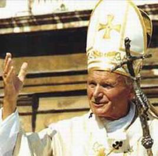
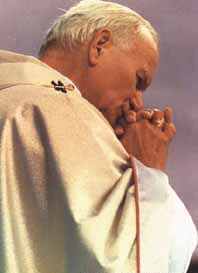
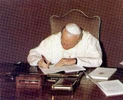
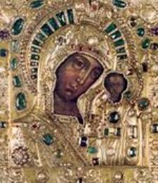
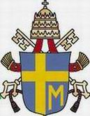
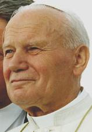

"O PONTIFICADO "
Desde o inicio do seu Pontificado, respeitou
com humildade e tolerância todas as 
João Paulo II revestiu o seu mandato com uma característica toda pessoal, exercitava paternalmente e com muita firmeza a doutrina cristã e fazia prevalecer a tradição em todos os temas que agitam a sociedade, mantendo as diretrizes da moral conforme os ensinamentos da Lei de DEUS. Não acolheu a ordenação de mulheres; manteve o celibato para os sacerdotes; não legalizou o divórcio e as separações matrimoniais; condenou os “gays” e lésbicas, assim como todas as uniões ilegítimas; condenou o aborto e o considerou um crime bárbaro contra a humanidade e contra a Lei de DEUS.
O Papa sempre pregou a honesta e sincera reciprocidade entre os casais: um não deve fazer aquilo que irá magoar, entristecer ou ofender o outro. A fidelidade é a condição essencial e mais exigida, para que exista harmonia entre ambos e seja aberto o espaço para a felicidade conjugal.
Com a experiência vivida em seu país, sentiu que o medo e a insegurança pairavam no coração dos cristãos. A busca da verdade, as incertezas no trabalho, a dificuldade em caminhar sob as barreiras e as limitações do conhecimento e a ânsia pessoal em alcançar êxito, deixam a humanidade perplexa e sempre em constante busca de “algo”, de alguma coisa ou de “algum outro caminho”, que possa servir de âncora para as suas realizações, para os empreendimentos, a segurança pessoal no viver cotidiano, a fim de alcançar as vitórias, as conquistas, inclusive a salvação definitiva, arrancando a dúvida e a desconfiança que querem criar raízes no interior do coração. Ele conseguiu com um profundo discernimento vislumbrar esta necessidade humana, e desde o limiar do seu Ministério na Sé de Pedro repetiu as palavras de CRISTO, lançando a exortação Divina: “Não tenham medo”! Não tenham medo da verdade, não tenham medo de DEUS, aproximem-se corajosamente com suas orações, com as suplicas e, sobretudo, com um imenso, dedicado e perseverante amor. Confiem e sejam fiéis. Aquelas palavras tinham também o objetivo de infundir força e coragem, em especial às nações reduzidas à escravidão e às quais ele anunciava a liberdade.
“A humanidade é sempre a mesma. Os sistemas que ela cria são sempre imperfeitos, e tanto mais imperfeitos, quanto mais as pessoas estejam seguras de si. De onde se origina isto" Pergunta o Papa. Vem do nosso coração. O nosso coração está inquieto; o próprio CRISTO conhece esta nossa angústia, melhor do que cada um de nós”. “ELE sabe o que há em nós”. (Jo 2,25)

“A Oração é uma Obra ou Trabalho da glória”, disse o Papa. Além de pedir, o fiel deve saber agradecer, assim como, deve saber implorar para obter o perdão de todos os seus pecados. Da mesma forma, deve-se rezar pelas vocações, não apenas sacerdotais e religiosas, mas também “pelas muitas vocações à santidade entre o povo de DEUS, no seio do laicato”. O Evangelho é antes de tudo, a “alegria da Criação”. Por sua vez, a “alegria da Criação” é completada pela “alegria da Salvação” e pela “alegria da Redenção”. Na Vigília da Páscoa a Igreja canta com toda alegria: “Ó feliz culpa, que nos fez merecer tal e tão grande Redentor”. Assim sendo, concluindo o seu raciocínio, o Papa nos faz compreender que o motivo maior de nossa alegria é possuir a força, através da oração, para vencer o mal e acolher a filiação Divina que constitui a essência da Boa Nova. Muito embora, esclarece Sua Santidade, a alegria da vitória sobre o mal, não ofusca a “realística consciência da existência do mal no mundo e na humanidade”. Daí a necessidade do fiel ser autêntico e “não ter medo” de rezar, de pedir ajuda, de viver em comunhão de amor com DEUS, de acreditar na força do ESPÍRITO SANTO e de crer que o Papa é o continuador da Missão dos Apóstolos, por determinação e escolha de CRISTO, conforme a vontade do PAI ETERNO.
A primeira metade do seu pontificado ficou marcada pela luta contra o comunismo na Polônia e nos países da Europa do Leste e do mundo. Na segunda metade foi relevante a sua crítica ao mundo ocidental capitalista, dando voz ao Terceiro Mundo e aos pobres.
Com 26 anos e 5 meses de pontificado, é o terceiro mais longo da história da Igreja Católica. O mais longo foi o de São Pedro Apóstolo que dirigiu a Igreja aproximadamente por 37 anos; e quem está em segundo lugar, pela longevidade, é o Papa Pio IX que governou a Igreja durante 31 anos e sete meses. Alguns números que se destacam de modo impressionante são aqueles das viagens pastorais que João Paulo II realizou fora da Itália; foram cerca de 104 viagens, visitando 129 países e mais de 1.000 localidades, onde presidiu cerimônias de beatificação (147) e 51 canonizações, nas quais foram proclamados 1.338 beatos e 482 santos.
O Papa Wojtyla
teve excelentes colaboradores e entre eles o Cardeal Joseph Ratzinger. 
João Paulo II promoveu e incentivou a aproximação com as outras grandes religiões monoteístas do mundo. Entretanto, também enfrentou acusações bizarras, como aquela de "proselitismo agressivo" feitas pelo mundo ortodoxo. A reconciliação com os judeus marcou a sua viagem à Terra Santa em Março de 2000, e também, representou uma mudança radical entre as duas religiões, criando condição para uma verdadeira coexistência pacífica e um intercâmbio profícuo e proveitoso.
Também estimulou o diálogo inter-religioso, o ecumenismo e o cultivo da paz, sendo o primeiro Sumo Pontífice a visitar o Muro das Lamentações em Jerusalém no dia 26 de Março de 2000, onde, num gesto admirável de perfeita humildade, pediu perdão pelos erros e crimes cometidos pelos filhos da Igreja no passado. Foi o primeiro Papa a pregar numa Sinagoga Judaica, a entrar numa Mesquita (em Damasco, na Síria), e a promover as jornadas ecumênicas de reflexão pela paz em Assis, na Itália, congregando todas as religiões numa Oração Mundial pela Paz. Foi o primeiro Papa a realizar uma visita à Grécia, desde a separação das Igrejas Católica e Ortodoxa no Cisma de 1.054.

Foram 14 as Encíclicas ou Cartas Encíclicas escritas por João Paulo II, que são documentos dirigidos a todos os Bispos e em consequência, a toda humanidade.
Pela ordem de emissão, temos:
1) “Redemptor hominis”(O Redentor do Homem) – Escrita entre 25/Fevereiro a 4/Março de 1979 – Explica a relação entre a Redenção alcançada por CRISTO para todas as gerações e a dignidade humana.
2) “Dives in Misericórdia” (Rico em Misericórdia) – Escrita em 2/Dezembro de 1979 – Ensina minuciosamente sobre a Bondade e a grandeza da Misericórdia de DEUS PAI, eterno CRIADOR.
3) “Laborem Exercens” (Exercendo o Trabalho) – Escrita em 14/Setembro de 1981 – Aprofunda o estudo sobre a necessidade do Trabalho, em seus diversos aspectos e ramos, para que seja realizado com dignidade.
4) “Slavorum Apostoli” (Os Apóstolos dos Eslavos) – Foi escrita em 2/Junho de 1985 - Sobre os Santos Cirilo e Metódio, padroeiros dos Povos Eslavos.
5) “Dominum et Vivificantem” (O Senhor que dá a Vida) – Escrita em 30/Maio de 1986 – Sobre o ESPÍRITO SANTO na Vida da Igreja e do Mundo.
6) “Redemptoris Mater” (A Mãe do Redentor) – Escrita em 25 de Março de 1987 – Sobre a Bem-Aventurada VIRGEM MARIA na Vida da Igreja que está a Caminho.
7) “Sollicitudo Rei Socialis”(Solicitude pelas coisas Sociais) – Escrita em 19/Fevereiro de 1988 - Sobre a reafirmação do papel da Igreja nas questões sociais.
8) “Redemptoris Missio” (A Missão do Redentor) – Escrita em 22/Janeiro de 1991 - Sobre o mandato missionário de CRISTO à Sua Igreja.
9) “Centesimus Annus” (O Centésimo Ano) – Escrita em 1/Maio de 1991 - Sobre a questão social: o Trabalho, o Capital e o Ensino. No 100º aniversário da encíclica “Rerum Novarum” (escrita pelo Papa Leão XIII em 1891, sobre a condição dos operários).
10) “Veritatis Splendor”(O Esplendor da Verdade) – Escrita em 5/Outubro de 1993 – Sobre os fundamentos da moral católica.
11) “Evangelium Vitae” (O Evangelho da Vida) – Escrita em 30/Março de 1995 - Sobre o valor e a inviolabilidade da vida humana.
12) “Ut Unum Sint” (Para que todos sejam Um) – Escrita em 30/Maio de 1995 – Sobre o empenho a fim de que haja o ecumenismo.
13) “Fides et Ratio” (A Fé e a Razão) – Escrita em 15/Outubro de 1998 - Sobre as relações entre a fé e a razão. Condena o ateísmo e a fé sem razão, e afirma a posição da filosofia e da razão na religião.
14) “Ecclesia de Eucharistia” (A Igreja da Eucaristia) – Escrita em 17/Abril de 2003 – Sobre a Eucaristia na sua relação com a Igreja.
Também escreveu diversas Exortações Apostólicas e um precioso Documento sobre a Mulher, a Carta Apostólica “Mulieris Dignitatem”, publicada em 15 de Agosto de 1988, sobre a dignidade e vocação da mulher, que se insere no contexto da promoção da mulher e na defesa da sua dignidade.

A oração do Rosário sempre foi uma das preferidas de Sua Santidade. A meditação dos Mistérios nos transporta para junto de DEUS e de nossa MÃE SANTÍSSIMA, revestindo o espírito das pessoas de uma profunda confiança e de muita tranquilidade, revigorando a disposição e estimulando a vontade, além de proporcionar uma agradável alegria interior. Por esse motivo, inspirado pelo ESPÍRITO SANTO, o Papa decidiu acrescentar mais “um Terço” na oração do Rosário, o Terço dos "Mistérios Luminosos" , contemplando outros Mistérios do Evangelho do SENHOR, que não tinham sido incluídos anteriormente. Assim sendo, o Rosário atualmente é composto de “quatro Terços”, Mistérios Gozosos, Mistérios Dolorosos, Mistérios Gloriosos e Mistérios Luminosos.
Outra manifestação importante do Papa João Paulo II se refere à chegada do ano 2000. Esta data sempre esteve presente no seu pensamento e na sua expectativa pessoal. E não simplesmente pela mudança do milênio, mas porque aquela data histórica coincidia com a celebração dos 2 mil anos do nascimento de JESUS e portanto, deveria constituir a ocasião propícia para uma profunda renovação espiritual e moral da comunidade católica. E este desejo existia em seu coração, desde quando era Arcebispo em Cracóvia. Através da Encíclica “Redemptor Hominis” , antecipou a sua decisão de anunciar um Grande Jubileu, que envolveria não apenas os cristãos, mas de alguma forma toda humanidade. Convocou os católicos para um exame de consciência de forma a realizar uma transformação radical de vida e também, que abrissem o coração para receber todos os irmãos, numa conotação fortemente ecumênica.
De fato, nas intenções do Santo Padre seria um momento providencial para acertar as contas com o passado, para purificar a memória de todos os erros, culpas e testemunhos negativos dos quais os cristãos foram responsáveis ao longo dos séculos. É suficiente, como exemplo, lembrarmos de tudo o que aconteceu nas Cruzadas.
Isso poderia, portanto, favorecer um
diálogo aberto e honesto com as outras Igrejas 
O seu Secretario Particular relata: “Mas antes dele iniciar este caminho de assumir a mea-culpa quis saber o que O Evangelho dizia sobre o assunto. O que JESUS faria nesta circunstância? E vendo tudo pela ótica da fé, aceitando como sinal da Divina Providência, tomou aquela decisão com serenidade”.
No inicio, apesar de haverem muitas pessoas que não estavam de acordo, havia também aquelas que o apoiava. A verdade é que aos poucos as resistências e perplexidades foram desaparecendo e aquele procedimento corajoso e sincero, abriu as portas do diálogo ecumênico e inter-religioso com todas as nações.
E para culminar e coroar aquele gesto do Sumo Pontífice, em 12 de Março de 2000, na Basílica de São Pedro, no Vaticano, realizou-se o “Dia Jubilar do Perdão”. E ele também estava presente e presidiu a cerimônia. Pela primeira vez, a Igreja inteira implorou a misericórdia de DEUS pelos pecados e omissões que mancharam os cristãos. Com emoção e de modo vibrante, o povo e todas as autoridades se comprometeram com cinco solenes “nunca mais”, a nunca mais trair o Evangelho e o respeito à Verdade.